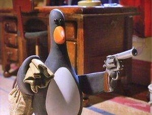

Fintech concept
Keyreyn
Secure, contactless payment using iris-recognition authentication.
FintechAuthenticationOpen Case Study →Innovation portfolio
A selection of technical and entrepreneurial concepts. Open a case study to explore the product thinking, technology, operating model and project link.

Fintech concept
Secure, contactless payment using iris-recognition authentication.
FintechAuthenticationOpen Case Study →Environmental technology
An IoT-enabled waterway clean-up and monitoring solution.
IoTSustainabilityOpen Case Study →Circular design
An Arduino-enabled concept for converting waste paper into seed paper.
AutomationCircular economyOpen Case Study →Materials innovation
A biodegradable packaging concept that gives waste materials another life.
Sustainable materialsWaste reductionOpen Case Study →